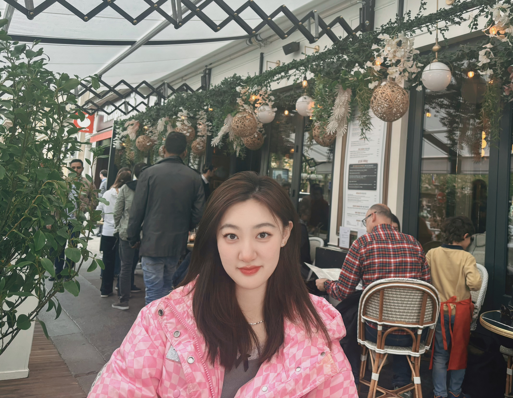

Xiaoxu (Monica) Ma
I am a Master's student at Georgia Institute of Technology, fortunate to work with Dr. Mark Riedl and Dr. May D. Wang. My research focuses on large language model alignment, world models, and multi-agent systems, with a broader interest in building reliable, controllable, and human-aligned AI agents.
Previously, I received my Bachelor's degree in Robotics Engineering from South China University of Technology, where I was advised by Dr. Zhenyu Weng. My background in robotics and machine learning motivates my interest in AI systems that can reason, collaborate, and adapt in complex real-world environments.
I'm always happy to chat or collaborate. Feel free to reach out!
Publications
-
Stable and Explainable Personality Trait Evaluation in Large Language Models with Internal Activations. Xiaoxu Ma, Xiangbo Zhang, Zhenyu Weng. Findings of ACL, 2026.
-
World Model Robustness via Surprise Recognition. Geigh Zollicoffer*, Tanush Chopra*, Mingkuan Yan, Xiaoxu Ma, Kenneth Eaton, Mark Riedl. CVPR Findings, 2026.
-
Input-Envelope-Output: Auditable Generative Music Rewards in Sensory-Sensitive Contexts. Cong Ye*, Songlin Shang*, Xiaoxu Ma, Xiangbo Zhang. CHI Extended Abstracts, 2026.
-
Unsupervised Data-Efficient Cross-Modal Retrieval with Global-Neighborhood Alignment Hashing. Runhao Li, Xiaoxu Ma, Zhenyu Weng, Yue Zhang, Guibo Luo, Huiping Zhuang, Zhiping Lin, Yap-Peng Tan. ICIP, 2026. To appear.
-
Research and Application of Time Series Prediction Model Based on Prophet Algorithm. Shuquan Man, Qiulin Chen, Xiaoxu Ma. IEEE ICCASIT, 2023.
Service
Reviewer, ACL ARR 2026; ICML 2026
Head Teaching Assistant, Introduction to Circuit, South China University of Technology, Fall 2024
Awards & Honors
Outstanding Student, South China University of Technology
EVE Energy Scholarship, South China University of Technology
First-Class Scholarship, South China University of Technology
Study Abroad Scholarship, South China University of Technology
Equity, Access, and Community
I care deeply about building academic spaces that are welcoming, equitable, and accessible to people from different backgrounds.
Growing up with limited access to research opportunities and mentorship has made me especially aware of how unevenly academic resources can be distributed. Scholarships, institutional support, and the guidance of mentors have played an important role in making my own path possible.
Because of these experiences, I believe that ability and curiosity exist everywhere, even when opportunity does not. I am always glad to share advice, discuss research paths, and support students or researchers from underrepresented or less-resourced backgrounds.